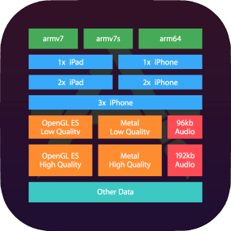
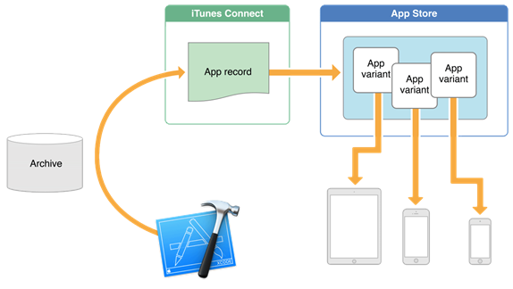
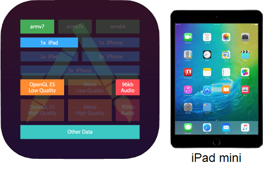
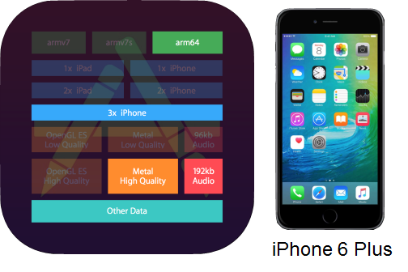

HowTo: Include App Thinning on iOS applications
As of iOS 9, Apple introduces the concept of App Thinning. Its aim is to reduce the size of the application when the end user downloads it from the AppStore. How does it work?Apple smart devices execute over the next architecture and, depending on the device traits, it will use some resources or others.  In these terms, every application properly developed with GeneXus can be published on the AppStore and when the end user downloads it, the application itself will request for the necessary and sufficient resources to execute it in a certain device. This concept of 'variants' is schematically described in the diagram below.  What does "properly developed" mean?Every developer should know that is a good practice to develop applications using multiple layouts, image variants and an independent theme for each platform (occasionally using inheritance of them). If they follow these simple guidelines, an iOS generated application is able to recognize the "necessary and sufficient" resources mentioned a few lines above, and the end users can download only those, saving a significant amount of storage space of their device. For example, if the developer designs the application for an iPad Mini, certain resources will be downloaded from the AppStore when the end user installs the application  But, if the developer also designs the application for an iPhone 6 Plus, other resources will be downloaded.  Scope
AvailabilityThis functionality is available as of GeneXus 15 See also
|